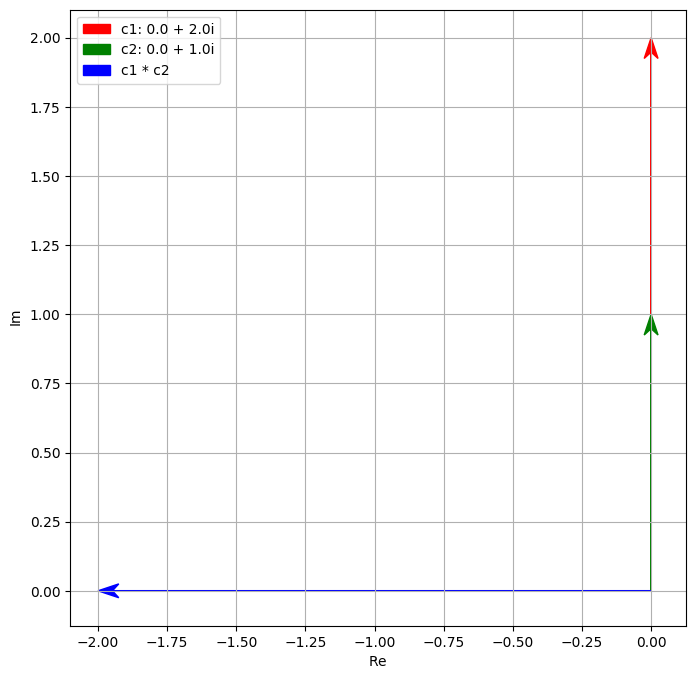
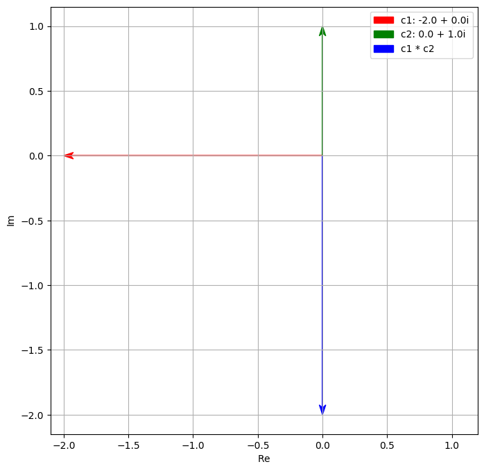
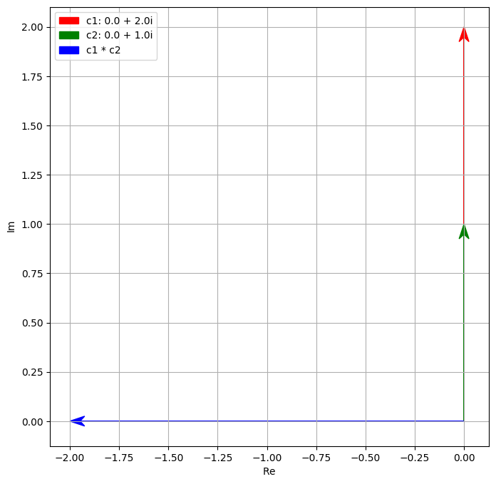
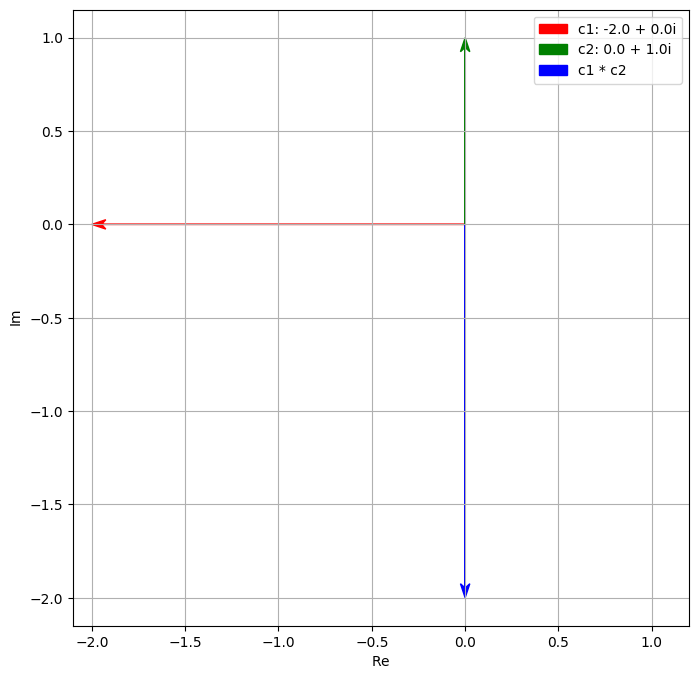
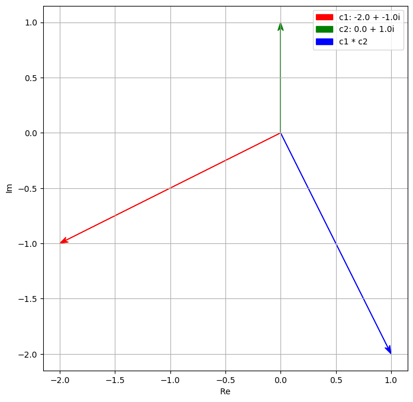
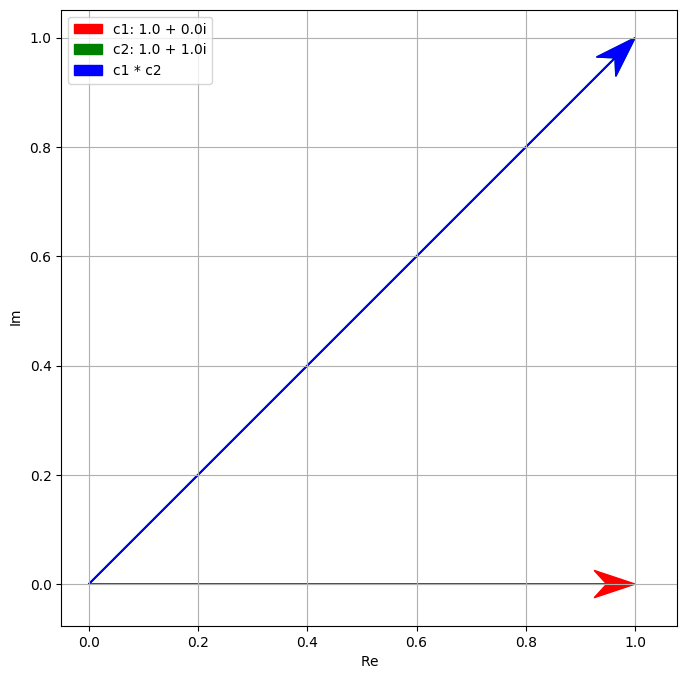
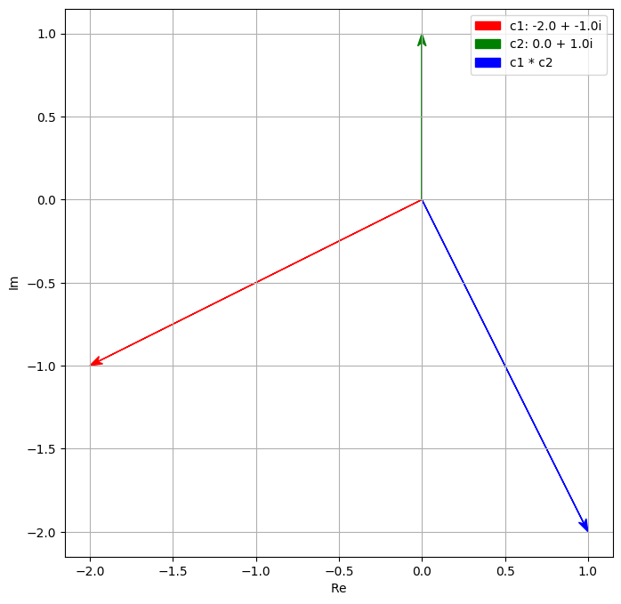
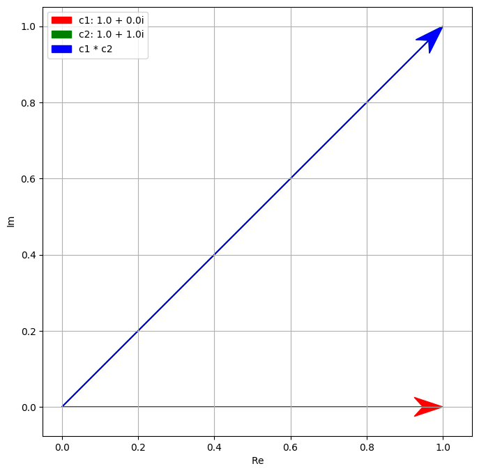

Thinking in another dimension#
Thinking in another dimension
... even it does not exist
... even if it is impossible to think about
My aim is not to "teach" maths
or purely introduce you to any numbering system
My objective is to
try to see a way to get one to think outside the box
or to see another dimension even if it does not exist
To appreciate different dimension of life...
And even if not agree ...
If not, at least to wonder,
And to be curious ...
And even if it is impossible to imagine these
and frankly even you know deep down that dimension does not even exist!
There are many maths I think very striking when I encounter it the very first time
- Chicken and Rabbit in one cage with 4 heads and 6 legs how many ...
- what is negative number
- It is not that /sqrt{2} is irrational or not, but the proof by contradiction
- imaginery number is real and there are at least 3 kinds of them
---> real number's infinity is larger than integer number's infinity
(technical terms is real number is uncountable)
---> any formal mathematical system which is better than arthimetic will
have statement in it that cannot be proven or disped in that system
(Or Should we say Mathematical Systems Always Contain Unprovable Truths)
And even worst (or brillant?) someone proved this theorem of unprovable truth!
---> in real world, triangle is either >=< 180 degree, which one then?
only one is the truth and is real
then why bother and what is the point of having 3 geometries
and even worst ... find all of them are useful!!!
--> maths is useful and relevant
But most suprising at all, is why maths is useful at all?
Why a human endeavour can have relevance to the world?
And what is the limit of this approach to life?
OK too much BS, let use start with a simple
--> projective geometry first
Imagine you have a circle of say radius 1 that
sit on a line of infinite length say the real number line
From the "north pole" of that circle you draw a line towards the line
then move left or right and map each point of the circle to the line
Can you see that each point of the circle can project to each point to the line
(techncailly not the +/- infinite as you only have one north pole la
can +/- infinite meant? let us not go that far. But even a bit short ...
do you find it amazing?
How can it be?
The circle has a circumference of 2pi
The length of the line is ... infinity
How can you map finite to infinitity
Can you really see the world in a sand?
Or even worst as in my most dislike Fan Yin (or no feeling Indian)
the world is all but a reflection of the pearl 因佗羅網
Just watch one water dew on the leave you can see the whole world in it
Anyway ... let us look at some number system as I promise to present on at least one!
Leopold Kronecker, who once wrote that
--> "God made the integers; all else is the work of man."
- a key and very dominant mathematicans who object irrational number, pi, set theory, ... etc.
- It was finally proved that pi is transcendetal number ...
- but as he said what is the point, they do not "exist" ! Illusion!!!
- (In a way he is not alone,
a lot of mathmaticians are also not very uncomforable with negative number ...)
--> Let us do zero first and then imaginery number
import os
print(os.getcwd())
/Users/ngcchk/Documents/Github/gpd2-win-unity1/ipadred-rain/imgno_book1/imgnobk1
import lib.main.a0_babylon_pos_0
not in main of a0
lib.main.a0_babylon_pos_0.display_img(1)
note
a) there are only 2 symbols 1 and 10
b) every number is actually by placing and counting number 1 and number 10 out; FULLY
c) reaching 59 then what ... 60 is a problem let us skip it first ;-P
lib.main.a0_babylon_pos_0.display_img(2)
d) Babylon use 60 as based and hence 1 is 60 * 60 *...
e.g. 1 here is 60^3 ...
e) A number's value is based on its position
The 1 above is 1 * 60 * 60 * 60 because its postion after you read in the hole number
In fact even worst you cannot tell what 1 meant until you have the whole number
as it uses the Big Endian convention
i.e. until you reach the end of a number you do not know what is 1
It can be 1, 60, 60*60, 60*60*... you do not know
(Cf the little endian for this number 40, 46, 57, 1
and after reading 40 you know it is just 40,
and after reading 46 as "nd number you know it is 46 * 60 ...
you do not need to wait for the whole number
or fight the egg head war of big ednian vs little endian )
The Roman does not use postional system and hence has no such issue
The only trick to remember if you see a small number earlier than a larger number deduct it
XL and LX where X is 10 and L is 50, what are the numbers ?
You do not need to know the position of X or L is you know it is always 10 and 50
In fact, there is no need of zero (except zero itself called nulla)
Actually Hans's does not really use a positional system
as 2,0001 is really 2 thousands and one not 2001
still have zero to sound better
f) For the issue 1574640 is 15,7 or 1,57 ... Babylon use gap
i.e. 1 gap 57 gap 46 gap 40
g) How about 60, 600, ...
seems to rely upon common sense?
h) But what about 601 6001 ... Big problem
The problem is that there is no zero and they use a positional system!!!
lib.main.a0_babylon_pos_0.display_img(3)
"a cuneiform tablet (actually AO 17264 in the Louvre collection in Paris)"
we have
2 ? 27 ?? 6 ? 9
gap, large gap, medium size gap
What is it?
2,27 square is 6 <0> 9 ...
2<gap>27 <very big gap> 6<larger gap>9
This is intrepreted as
2*60+27 = 147 * 147 = 21,609 or 6*60*60+9
Thanks you very much for the attention!!!!!
Babylon consider zero as nothingness, and does not exist
But they need at least in their positional based number system
Even if zero does not exist
but one may have to accept its usefulness
and use it ... at least that is what the Babylonian did
You may think it does not exist, but your system really need it wow!!!!
IT DOES NOT EXIST
IT IS NOT REAL
THERE IS NOTHING THERE!!!!
Still...
Many maths and possibly many religion and philosophy are like that!!!
As said only integer really exist, all are ... (the guy is mad mathematicans btw)!
actually the imaginery number is unusual, but not that unusual.
Like negative number and zero it does not exist.
But it exist somehow in some way and you know it, like the zero in Babylonian system.
You need it, even though, well, it does not exist.
The major turning point is in the climbing of grease pole of being a maths professor!
In the video I provided (see https://www.youtube.com/watch?v=cUzklzVXJwo), one of the challenge
at that time is the equation of
$$
{x^3} = 15x + 4
$$
Now this equation can be solved unlike $x^{2} = -1$ which we can say there is no solution.
Simple! 4 is an answer!!! But then we have a problem, the general equation leads to this:
$$
\sqrt[3]{2 + \sqrt{-121}} + \sqrt[3]{2 - \sqrt{-121}}
$$
or {2+(-121)^(1/2)}^(1/3) + {2-(-121)^(1/2)}^(1/3)
in fact this complex expression is just 4,
as it turns out it that if you treat \sqrt[3]{2 + \sqrt{-121}} as a + bi
and \sqrt[3]{2 - \sqrt{-121}} as a - bi then one can find out that
{2+(-121)^(1/2)}^(1/3) = 2+i and
{2-(-121)^(1/2)}^(1/3) = 2-i and together it is just
4
in fact once we know 4 is a factor you can easily found out all the REAL root of this equation:
i.e. 4,
$-2-\sqrt{3}$ and
$-2+\sqrt{3}$
and the equation would be
$$
(x-4)(x-(-2-\sqrt{3}))(x-(-2+\sqrt{3}))
$$
It is only the intermediate step use imaginery number!
(Just like later quantum mechanics, the intermediate step use imaginary number,
but one can only observe real number ... a major debate leading to Coppehegan Interpretation,
or just shut up and calculate!)
If imaginary numner i.e i^2 = -1, it does not exist it seems.
But could it be like the i above and the 0 in babylon above,
we can treat it as existed but not ultimately.
In fact this concept also apply to the trial of Galialo!
(Just he does not accept this kind of argument. No tool argument. No just calculate...)
Our mind is bounded as we too used to the magic of the arthimetic since ancient times:
一與言為二，二與一為三。自此以往，巧歷不能得，而況其凡乎！
One and Speech are two; two and one are three.
Going on from this (in our enumeration), the most skilful reckoner cannot reach
(the end of the necessary numbers), and how much less can ordinary people do so!
see https://ctext.org/zhuangzi/adjustment-of-controversies
道生一，一生二，二生三，三生萬物
"The Dao produced One; One produced Two; Two produced Three; Three produced All things."
see https://ctext.org/dao-de-jing
(Unlike zhuang zi, Laozi may also touch on older modular view of I Ching
but not necessarily Zhou version; both he and Zhuang Zi likely of one dynasty before
One has to go back much earlier to know there might be at least 5 sources ....)
+/* can stay on natural number stated above ... may have prime/composite number
0 may or may not natural number ...
------ that is gap here as pointed out by the "mad" maths guy
Once we start to think backward then we have a lot of number/problem/issue:
- reverse of +
rotation of 180 degree or pi radian?
reflection
shift
already unnatural (0 by Indian, -ve by Chinese)
generate integer
/ reverse of *
have rational number (by Egyptians)
(technically can generate infinite but seems not historical from this line of thinking?)
(lots of strange number like finite decimal, dyadic (final binary), repeating decimal
but one must be careful, the reason why it is that because we try to express say
1/3 as a sum of 1/10+...
/sqrt reverse of one particular type of *
irrational especially possibly the first example of $/sqrt{2}$
(proved by geometry then)
... algeraic irrational and a lot of others like our imaginery number
ratio and change
pi (nature unknown and only in 19th century prove to transcental like e)
ratio of circumference and radius (radian is 2pi because of 2 pi r)
e as the growth rate or change in y is equal to y
complex number
discussed here through algbera
many strange number system now, but unlike many other systems,
they ARE NUMBER SYSTEM e.g. you can +/-/*///^ etc.
But we most use real number (and in fact can stay on it even if we use imaginery number)
Let us SEE THE MAGIC
Note
1 * i = i (i^1)
1 * i * i = -1 (i^2)
1 * i * i * i = -i (i^3)
1 * i * i * i * i = 1 (i^5)
In fact one can see that every 4 operation of i comes back to 1
What is that operation
ROTATION! to be exact rotation of 90 degree or pi/2 radian
i is not on real number line and is NOT a real number no doubt,
but could be it is a rotation of real number to another dimension
Things does not exist in the real world may not have consequences in the real world
Think
Outside the box
北冥有魚，其名為鯤。鯤之大，不知其幾千里也。
化而為鳥，其名為鵬。鵬之背，不知其幾千里也；
怒而飛，其翼若垂天之雲。是鳥也，海運則將徙於南冥
In the Northern Ocean there is a fish, the name of which is Kun
- I do not know how many li in size.
It changes into a bird with the name of Peng,
the back of which is (also) - I do not know how many li in extent.
When this bird rouses itself and flies,
its wings are like clouds all round the sky.
When the sea is moved (so as to bear it along),
it prepares to remove to the Southern Ocean.
The Southern Ocean is the Pool of Heaven.
see https://ctext.org/zhuangzi/enjoyment-in-untroubled-ease
Once we accept another sky dimension we can no longer bounded by the sea
The metamorphosis of 鯤(Kun)鵬(Peng), no longer a fish but a bird!!!
Once we open up i as another dimension
In fact it has to be 90 degree from real number dimension,
i and 1 could easily AND NATURALLY form a number with 2 dimensional
The other trick now is because it comes from rotation,
there is a lot of usefulness to it and it is now everywhere!
%matplotlib inline
import lib.main.a1_i_mul_plot
lib.main.a1_i_mul_plot
not via main
it is a rotation
and i always rotate 90 degree or pi/2 radians

%matplotlib inline
lib.main.a1_i_mul_plot.some_plot()
-- more example--

 



 



#import lib.main.e5_i_anim_hyperplot
print ("c3; red start and blue end")
import lib.main.c3_i_anim_circle_rotate_plot
import numpy as np
lib.main.c3_i_anim_circle_rotate_plot.plot_i_circle(np.pi/4)
c3; red start and blue end
lib.main.e5_i_anim_hyperplot
not via e5 main
/Users/ngcchk/Documents/Github/gpd2-win-unity1/ipadred-rain/imgno_book1/imgnobk1
not vai c3 main
index: 15
theta4 at 2.530141734434733
a= -0.8188159710183593 b= 0.5740560997021644
/Users/ngcchk/Documents/Github/gpd2-win-unity1/ipadred-rain/imgno_book1/imgnobk1/lib/main/c3_i_anim_circle_rotate_plot.py:238: UserWarning: The figure layout has changed to tight
plt.tight_layout()

and if you change ø you can see
- a one dimensin being (on x) a peridic change (like as real number being we see i,-1,-i,1 ...)
- or for 2 dimension being (on i and x), you can see a wave!!!
Any number on this 2 dimension plane can work like any other number
It can be added, subtracted, multiplicaion and divide. (This is different from vector.)
Not just that, given we have a multiplication, and we know there is rotation involve,
one can seperate any complex number into another 2 dimension (not like x and y),
but its multiplcaiton character and its rotation character.
Looking at real number
c = 2 * 3
c will be double of 3,
or if we * c it will be 6 *
hence we know * z would have one dimension of multiplication of its magnitude, so ...
z = magitudeof z * (z / magitude of z)
or |Z| * Z/|Z|
i.e. we know that
*z will mean using |Z| to multiply and Z/|Z| to rotate
In fact we call this the polar form i.e. z = |Z| * f(ø) or A** f(ø)
--> and in the diagram we can even represent it as
z = A*(cosø+isinø)
BTW to calculate A one easy way because complex number is 90 degree rotation,
it follows Euclidian Geometry or
z = a + bi then |z| = /sqrt{a^2 + b^2}
= (a + bi)(a - bi) where a-bi is the conjugate of z
we will find this useful when the rotation is not Euclidian ...
print ("another example - c3; red start and blue end")
import lib.main.c3_i_anim_circle_rotate_plot
import numpy as np
#lib.main.c3_i_anim_circle_rotate_plot.do_anim()
# need to run in terminal for the moment???
another example - c3; red start and blue end
z = A*(cosø+isinø)
This does not help us very much as a forumla goes
If we rotate z1 and the z2
z1*z2 invoving cos and sin and is very painful
----
However, euler has studied and found out that
e^iø = cosø + isinø <-- the euler equation
substitue it one can get the rotation part is actually e^iø
or z = Ae^iø
For example z1*z2 = A1*A2(e^iø1)(e^iø2) = A1*A2*e^i(ø1+ø2)
<-- NO cosine and sine but multiplication, addition and power
(another thankful one is (cosø + isinø)^n = (cosnø + isinnø) Moivre and Euler
This will help the next 100+ years of enginering, and maths and ...
as rotation is everywhere and now additing of rotation is really just addition!
As beauty if one substitue pi into that euler equation,
we have what many call the most beautiful mathmathical equation :
e^ipi = -1
and may we note:
-1 is arthmetic unusal thing
pi is geometry unusal thing
i is algebera unusal thing
e is calculus unusal thing
They are from total different field of human endeavour ...
and somehow these unusal all join up into this
EULER IDENTITY
Unfortunately and may be fortunately someone observe that i nature is rotation
and hence if one observe how i rotate, one can generate wave as seen above.
And if one note that the change of this i is related back to itself,
a guy actually create a quantum mechanic out of this imaginary number
change of wave over time = i * [...] * wave itself <-- basic Schrödinger equation
---- Part 1 finshed with some quantum mechanics puzzle
we can only observe real number
The rotation is there but we still see the real number
Like the one dimension man only see x not i in the rotation demo
Why one can use magnitude to observe as probability
Random is built-in and determine in the last instance and not before
And what happen to the The Schrödinger Cat then
Discrete and minimum energy, ... any other discrete
Uncertainty principles ...
BTW, real world offer more rotation ...
not only we have rotate 360 i,
but we also rotate 720 degree to go back to itself
… and like the song "love always around us" in 4 wedding, it is all around us!
may be in the future we talk about electron!
Also, you may note it is i, but actually someone has expanded into 4 dimension
and it is use in every computer game
when you rotate a character you fit the transformation into this 4 dimension rotation
...
import lib.main.e5_i_anim_hyperplot
print(lib.main.e5_i_anim_hyperplot.lorentz_t_t00())
print(lib.main.e5_i_anim_hyperplot.lorentz_t_f00())
lib.main.e5_i_anim_hyperplot.hyperplot_and_tell()
[0, 6.928203230275509]
[-4.618802153517006, 9.237604307034012]
A taste of part 2
- if quantum mechanic is about the rotation, one observe is that i does not change during rotation
- the reason is that its magnitude is defined for a + bi -> (a + bi)(a-bi) or a^2 + b^2
What if we invent another imaginery number call split complex number where
j^2 = +1!
Well you say it is pointless as j is just 1. But once we accept you can have 2 dimension ... why not?
The issue is that what this imaginery number rotate. The magnitude should be constant and hence
A = (a + bj)(a-bj) = a^2 - b^2. Note the -ve sign there.
It is a hyperbola not a circle it will be draw when it rotate.
Use?
Well, it turns out our spacetime are related like this
(ct)^2 - x^2 - y^2 - z^2 or if concentrate on only time and say x dimension movement it would be
a^2 - b^2 format
all those talk about time dilution and length contraction ... all because of this split complex number
Not only we live in imaginery number as a quantum being
We also live in split imaginery number as a relativity being
I am not sure I want to got the third imaginery number well ...
Part 2 (to be developed)
—> Draft to be tidy up with demo
– what if our world use this split complex number as above using j^2 = 1 (instead of i^2 = -1)
Unlike Galieo and Netwon which use absolute time and space and hence change observation frame by traveling say on a train does not affect the time and space. You worldline shift (and not rotate) … but this is against the issue that one thing does not shift or light speed cannot be changed.
Here the invariant is not time or space but a join number by them (or split complex number).
More importantly the light wave has zero spllit complex number and hence whatever you “rotate” its speed does not affect because it is 0. 0*whatsoever is still 0.
Or 0 = x+tj (here j is in time and s in distance, with x^2 - t^2 = constant)
In fact solve this equation x = +/-t and by using a proper light always travel at 45 degree (or pi/4 radians) and 135 degree … i.e. just x = t and x = -t (scale - t in year say and x is distance travel by light in 1 year)
Graphic (see above)
To understand
Yes it helps a bit in understand one of the strange thing about relativity. The key issue is about the
Galielo relativlity (the shift not rotate of timeline)
Graphic
and
The strange way our real world operate or there is a constant that is independent from our frame of reference (at 0 or constant speed). 0 set the limit and non-0 confine us to < c.
–
Graphic see
One observer (red, point upward as x=0 and t ever-increasing) Two observer (red + green) View from first (red point upward and green to the right) View from second (red point to the left and green now point upwards as at rest) Note the rotation is using hyperbola as whatever frame rotate there is a constant s^2 = t^2 - x^2
And most important if you just look at time, you can see it shorten and so is length. Becuase it is the difference between time and space that matters. Individual dimension it change this way becaues of the negative side. (BTW, some textbook do x^2 - t^2. )
Part 2 end
Twin Paradox (a third blue observer, acceleration or doppler)
Geometry change from inerteria to acceleration or Rindler not Gravity
Then how about the whole geometry from flat to curved due to mass (General, using projective and differntial geomtry, plus group …) (Not about acceleration as in 2, as gravity is not acceleration)
other imaginery or complex number like dual number
<— Draft to be tidy up with demo
Finaly, the complex number and split complex number has joined as Quantum Field Theory
Or the wave travel in relativity manner,
-- its vibration follow the complex number
-- but its velociy follow the split complex number (a hyperbola worldline).
BTW, sadly that is already 50+ years ago.
Unfortunately we still do not have the wave onto the general relativity
-- projective geomoetry and differential geometry ...
Thanks for your patient and attention.
We live briefly in these 2 imaginery number (and more) world.
What you see is NOT real or at least NOT JUST REAL!